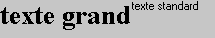
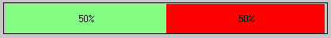
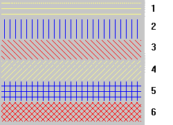
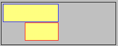

<P>xxxx
Sélection d'une police de caractères définie dans la feuille de styles du masque.
Si xxxx est omis, la police de l'objet graphique redevient la police courante.
Exemple :
ff.graph = "<p>grand<t>texte grand<p><t>texte standard"

<C>xxxx
Sélection d'une couleur définie dans la feuille de styles du masque.
Si xxxx est omis, la couleur de l'objet graphique redevient la couleur courante.
Exemple :
ff.graph &= "<bafv>3"
ff.graph &= "<c>vert"
ff.graph &= "<b>50,0"
ff.graph &= "<c>rouge"
ff.graph &= "<b>50;50"

<ha>n
Commande permettant de hachurer les barres.
N peut prendre une valeur de 1 à 6 pour spécifier le type de hachures.

<cc>xxxx
Sélection d'une couleur pour encadrer les barres horizontales ou verticles.
xxxx est un nom de couleur de la feuille de styles associée au masque. Si xxxx est omis il n'y a pas de bordure autour des barres.
Exemple :
ff.graph &= '<c>jaune'
ff.graph &= "<cc>bleu"
ff.graph &= "<b>50,0"
ff.graph &= "<s>"
ff.graph &= "<cc>rouge"
ff.graph &= "<b>30;20"
